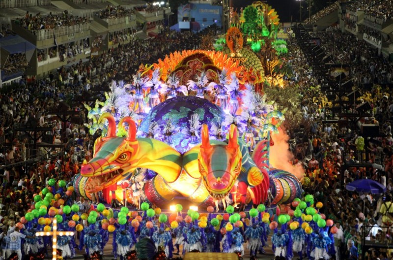

Northern Lights/Aurora Borealis
An aurora, sometimes referred to as a polar light or northern light, is a natural light display in the sky, predominantly seen in the high latitude (Arctic and Antarctic) regions.

Melissani Lake, Greece
Melissani Lake is covered by the cave on the Kefalonia island. On the outside the cave is surrounded by the forest and on the inside a magnificent site opens: a rocky cave filled with crystal clear water.
In Greek mythology the site is known as the Cave of the Nymphs. It has two big halls and an island in the middle. One of the halls opens on the surface and lets the light in, which makes the water so clear it seems that the boats are gliding through the air.
Stay at an Underwater Hotel
Who needs to go out when you can have a sight-seeing tour relaxing on your bed?

Snow Igloo Hotel, Finland
In some of the coldest parts of the world, designers and architects use ice and snow to build ice hotels, igloos, event pavilions and beyond. Few are designed to last to the end of winter, but all are marvelous while they stand. The Kakslauttanen Arctic Resort in Finland offers a variety of accommodations, including snow igloos. Guests who book a snow igloo during their stay get to sleep inside a shelter of ice. The temperature is kept at a consistent level regardless of the temperature outside and the guests are provided with down sleeping bags to keep them warm when they turn in for the night. I do not like cold very much, but this has to be one hell of an experience.
Water bungalow, Maldives
It will be hard to imagine life on land after a vacation sleeping over the Indian Ocean.
Oktoberfest, Munich
This is the mother of all Oktoberfests, the world's biggest gathering of beer lovers. And it won't be complete without attending it in the Dirndl-style dress and accessories. Oh so pretty and swag!
Trolltunga Cliff, Norway
Formed 10,000 years ago, Trolltunga, or Troll tongue, is a piece of rock jutting horizontally out of a mountain about 1100 metres above sea level. The view is supposedly breathtaking after a super tough hike. Talk about living on the edge!
Carnival, Rio De Janeiro
Dance, music, colors.. what's not to like?
Croatia's Sea Organ
If the sound of waves lapping gently onto the shore puts you in a trance, then it's time you listen to the Morske Orgulje ‑ or, the Sea Organ. The crooning structure in the video below is a 230-foot long instrument on the coast of Zadar, Croatia, that plays mesmerizing harmonies using the movements of the sea.